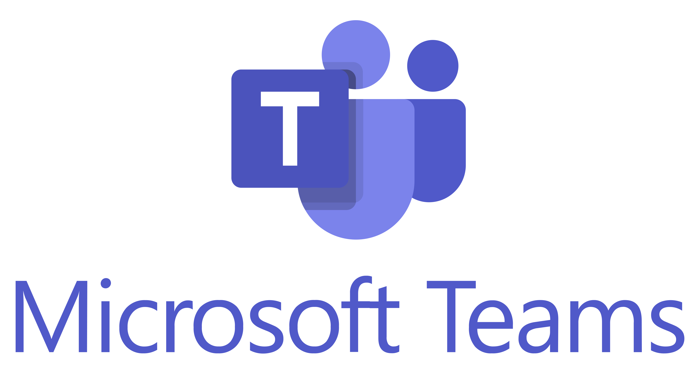

Teams Training Learning Path
Modules in this learning path earn you 3400 XP when you take each module assessment. Assessments verify your knowledge and award official Microsoft badges.
Module 1: Introduction to Collaborating with Microsoft Teams (25 min)
700 XP
Module 2: Create and Manage Teams and Channels (46 min)
900 XP
Module 3: Collaborate in Teams and Channels (40 min)
1000 XP
Module 4: Facilitate Meetings & Events (36 min)
800 XP
Module 5: New Features Deep Dive
Explore AI-driven and productivity enhancements in Teams.
Importance: Harness latest innovations to boost individual productivity and drive organizational transformation.
Module 6: Integrations & Advanced Use
Extend Teams with apps, workflows, and SharePoint.
Importance: Centralizes tools and data, reducing context-switching and streamlining processes.
User Feedback
- Accessible via Github Users Onboarding Board.
- Feedback collected through embedded Microsoft Forms.
- Regularly reviewed and incorporated to refine training content.
- Official Microsoft badges upon completion.